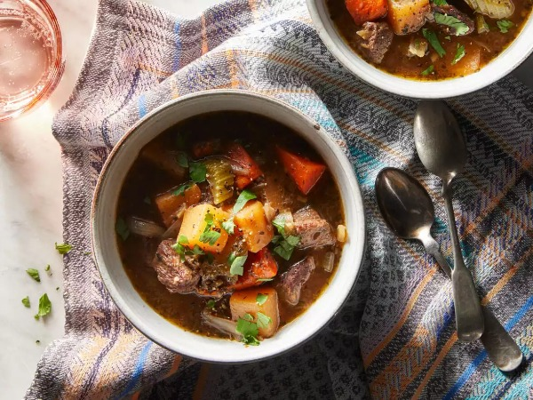

Rutabaga Beef Stew

Rutabagas and beef chuck roast make this stew
a hearty and comforting main dish any night.
It is hearty, filling, and inexpensive not to mention extremely delicious and fairly easy to make.
The hardest part and the most time-consuming part for this stew is preparing the vegetables.
I chop and dice all my vegetables by hand and so it can consume a little bit more time,
but it is
very much worth the extra time it takes. Pork, beef, or venison are all
good in this recipe, too.
Ingredients
- 1 pound boneless beef chuck roast, trimmed
- 2 tablespoons all-purpose flour
- ½ teaspoon salt
- ½ teaspoon ground black pepper
- 2 tablespoons vegetable oil
- ½ cup dry red wine (Optional)
- 3 cups low-sodium beef broth
- 2 cups cubed rutabaga
- 1 medium onion, cut into thin wedges
- 4 carrots, cut diagonally into 1-inch pieces
- ½ cup thinly sliced celery
- 4 cloves garlic, minced
- 2 bay leaves
- 2 teaspoons herbes de Provence
Directions
- Cut beef chuck roast into 3/4-inch pieces.
- Toss together beef, flour, and 1/4 teaspoon each salt and pepper in a bowl until coated.
- Heat oil in a large pot over medium-high heat.
Add meat and cook until browned, about 5 minutes.
- Add red wine (if using) to pot and simmer until alcohol evaporates, 3 to 4 minutes.
- Stir in broth, rutabaga, onion, carrots, celery, garlic, bay leaves, herbes de Provence,
and remaining salt and pepper.
Bring to a boil.
- Reduce heat and simmer, covered, until meat and vegetables are tender, 30 to 40 minutes.
Discard bay leaves.
More Recipes